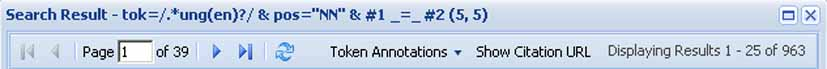
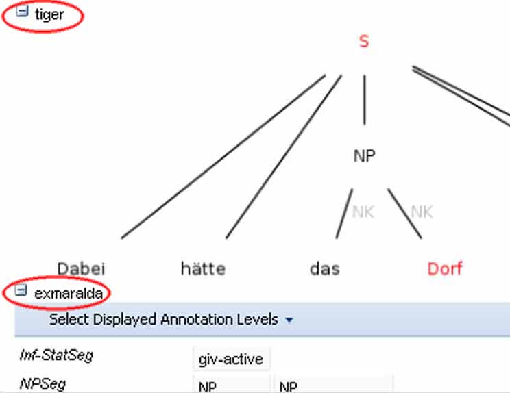

Using the ANNIS2 Interface
The ANNIS2 interface is comprised of several windows, the most important of which are the search form and the results window.The Search Form

The Search Form on the left of the interface window is available immediately after login. In the middle, the list of currently available corpora is shown. Using the checkboxes on the left of each corpus, it is possible to select which corpora should be searched in (hold down 'shift' to select multiple corpora simultaneously). If you cannot see a corpus that should be available to you, or else if the corpora list is too cluttered, you may click on "more corpora" to open the corpora window. You may then drag and drop the desired or unwanted corpora between the list and the window.

The "AnnisQL" field at the top of the form is used for inputting queries manually (see the tutorials on the ANNIS Query Language). As soon as a corpus is selected and a query is entered or modified, the "match count" under this field will be automatically updated to reflect the search results. When modifying a query, a delay of two seconds ia activated before the query is re-sent to the server.
Once a match count has been returned, the "show result" button will be come available. Click on this button to view the results of you query in the result window. The context surrounding the matching expressions in the result list ist determined by the "context left" and "context right" options at the bottom of the search form, and can be set to up to 10 tokens on each side, though some corpora allow longer spans such as entire texts to be viewed using special discourse visualizations.
The Result Window
The result window shows search results in pages of 25 hits each. The tool bar at the top of the window allows you to navigate between these pages. The "token annotations" on this bar allows you to toggle the token based annotation, such as lemmas and parts-of-speech, on or off for you convenience. The "citation URL" provides a hyperlink which you can e-mail or cite, allowing others to reproduce your query.

The result list itself initially shows a KWIC (key word in context) concordance of matching positions in the selected corpora, with the matching region marked red and the context in black on either side. Token annotations are displayed in gray under each token, and hovering over them with the mouse will show the annotation name and namespace. More complex annotation level can be expanded, if available, by clicking on the plus icon next to the level's name, e.g. tiger and exmaralda for the annotations in the tree and partiture in the picture below (circled in red).
